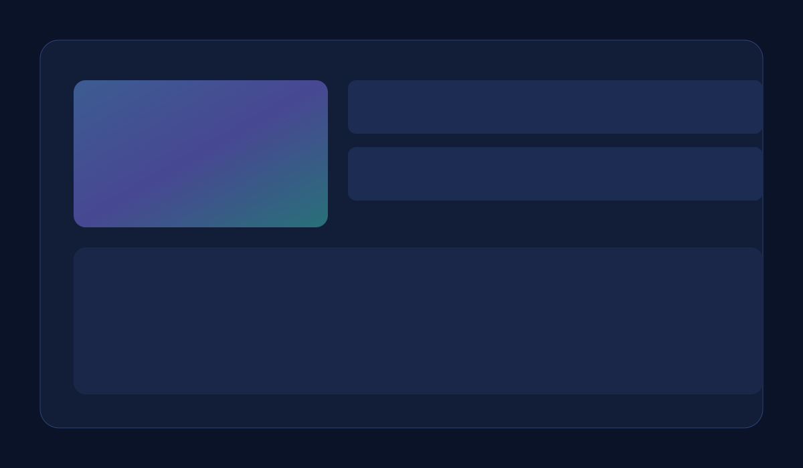

Allocazione alternativa istituzionale
94%Allineamento medio al mandato.
48hTempo medio per memo investimento.
31%Aumento dell'efficienza del capitale.
Allocazione alternativa istituzionale per rendimento corretto per il rischio
Fuelaris Capital supporta fondi pensione, family office e team di tesoreria con un framework completo di allocazione alternativa istituzionale. Uniamo governance, liquidità, execution e reporting per migliorare mandato fit, efficienza del capitale e conformità.
Richiedi briefing istituzionale
Ricevi una roadmap operativa per il tuo comitato investimenti.
7,2 Mld$
Capacità di allocazione per bucket di liquidità.
22
Giurisdizioni coperte con checklist compliance.
0,38
Riduzione media del costo di execution.
Trimestrale
Reporting governance pronto per board.
Perché il mercato premia la governance attiva
Volatilità e frammentazione della liquidità richiedono disciplina istituzionale. Servono controllo operativo, execution di qualità e trasparenza continua verso comitato e regolatore.
Architettura mandato
Sleeve calibrate su rischio, liquidità e obiettivi rendimento.
Orchestrazione execution
Valutazione broker/venue su slippage e qualità fill.
Workflow governance
Dossier comitato con ipotesi, downside e soglie escalation.
Fabric reporting
Dashboard multi-entità con tracciabilità completa.
Modello operativo allineato al mandato
Standardizziamo ruoli decisionali, controlli execution e data lineage per scalare senza fragilità operativa.

Processo dalla diagnosi al deployment
1. Diagnosi
Valutazione vincoli portafoglio, concentrazione e policy.
2. Ingegneria mandato
Definizione sleeve e guardrail di liquidità.
3. Execution controllata
Implementazione graduale con scorecard qualità.
4. Supervisione continua
Attribution, reporting e review trimestrali.
Metriche robuste sotto scrutinio istituzionale
Le metriche collegano rendimento corretto per il rischio, aderenza governance ed efficienza netta con evidenza verificabile.
Confronto doppia metrica
Variazione prima/dopo implementazione.
Insight operativi per il comitato
Trasformiamo complessità quantitativa in decisioni chiare su mandato fit, controllo rischio e crescita efficiente.
Matrice rischio e controllo
| Vettore rischio | Policy controllo | Beneficio investitore |
|---|---|---|
| Mismatch liquidità | Scala rimborsi con soglie stress. | Maggiore prevedibilità. |
| Drift execution | Analisi costi transazione e ranking venue. | Riduzione slippage. |
| Gap governance | Doppia approvazione con audit trail. | Solidità regolatoria. |
| Frammentazione reporting | Fonte unica per attribution e compliance. | Supervisione più rapida. |
Recensioni investitori
LM
Lucia Moretti
VERIFICATO
Chief Investment Officer · Roma
«Governance ed execution sono diventate finalmente misurabili.»
DR
Davide Rinaldi
VERIFICATO
Family Office Director · Milano
«La struttura di liquidità ha migliorato il ritmo dei nostri impegni.»
AK
Arianna Keller
VERIFICATO
Treasury Lead · Torino
«I comitati ora partono da dati coerenti e verificabili.»
JP
Jacopo Perri
VERIFICATO
Portfolio Strategist · Bologna
«Rendimento corretto per il rischio in crescita, attrito compliance in calo.»
Domande frequenti
La diagnosi parte entro cinque giorni lavorativi e il design mandato in tre-quattro settimane.
Ogni sleeve è collegata a bucket liquidità e finestre di stress.
Sì, con feed standard per custodia, tesoreria e board reporting.
Sì, con controlli audit-ready e logica compliance strutturata.
Monitoriamo slippage, fee drag e qualità execution per migliorare il netto.
Review trimestrali e escalation ad hoc in caso di soglie superate.
Maggiore aderenza mandato, resilienza liquidità e decisioni più rapide.
Allinea il prossimo ciclo di capitale
Fuelaris tratta l'allocazione come prodotto di governance con integrità operativa misurabile.